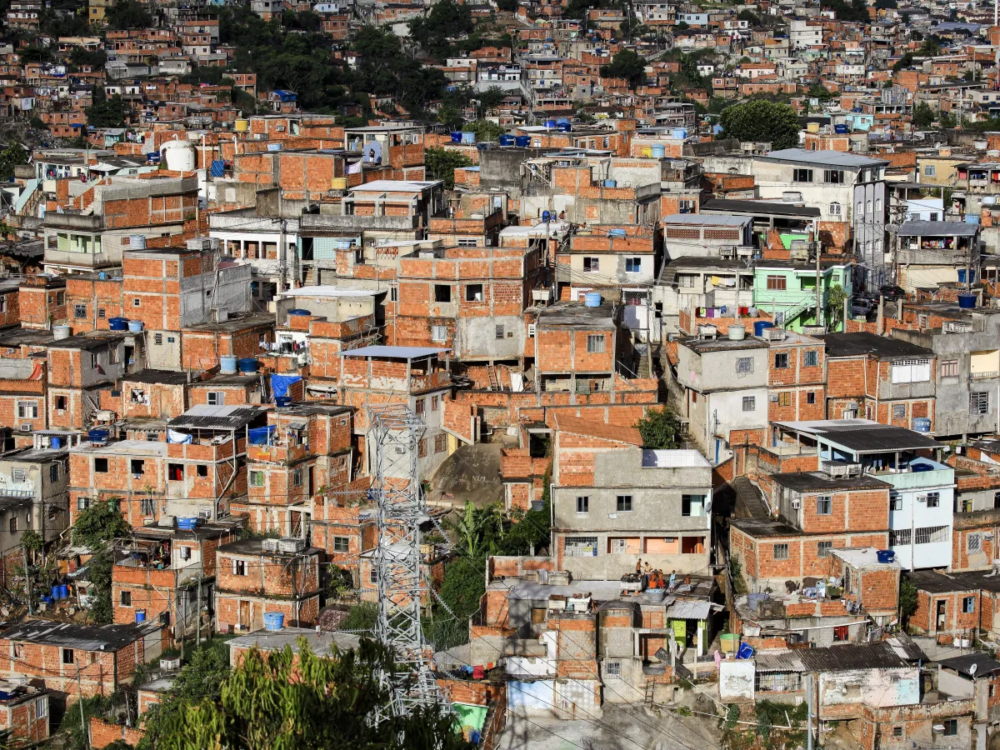
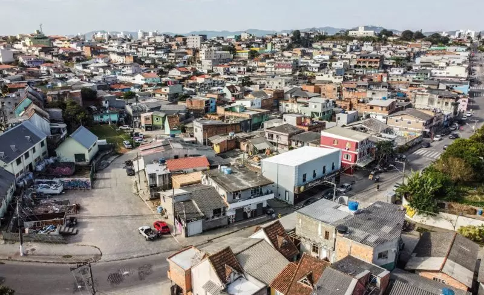
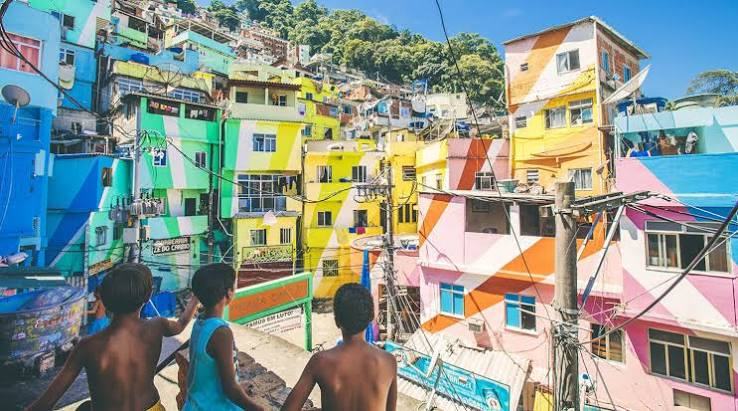
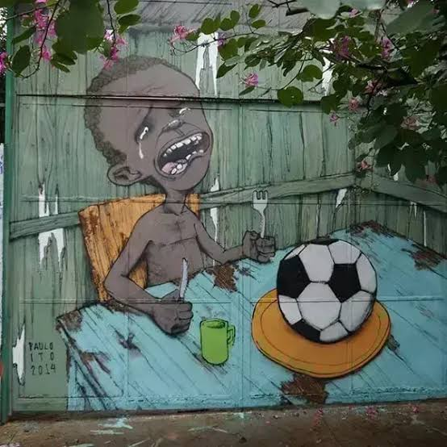
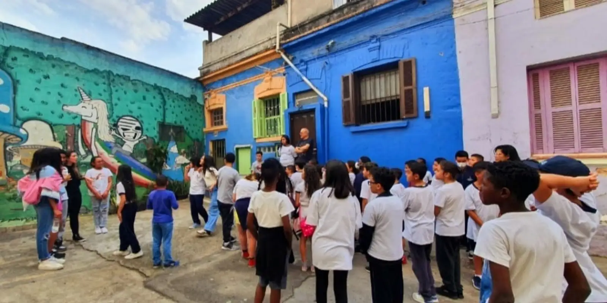

assets/periferia.png
Foto de periferia
Foto de periferia

assets/monteCristo.png
Foto do Monte Cristo
Foto do Monte Cristo
Consciência Negra
Periferia é centro: o caso do bairro Monte Cristo, em Florianópolis/SC
Grupo: Luan Henrique, Leonardo Mathias, Cauã Rodrigo e Gustavo Medeiros
Turma: 201
Turma: 201

assets/comunidades.png
Foto da comunidade
Foto da comunidade

assets/rua.png
Foto de arte de rua
Foto de arte de rua

assets/projeto.png

assets/vista.png